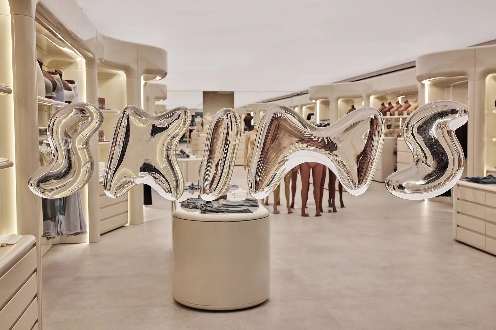
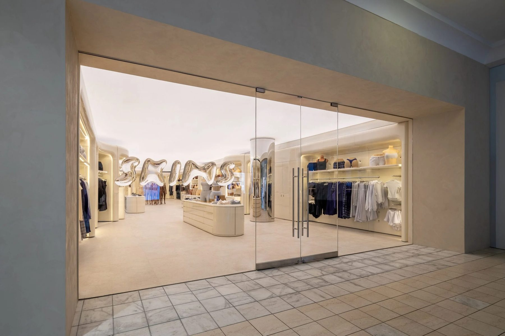
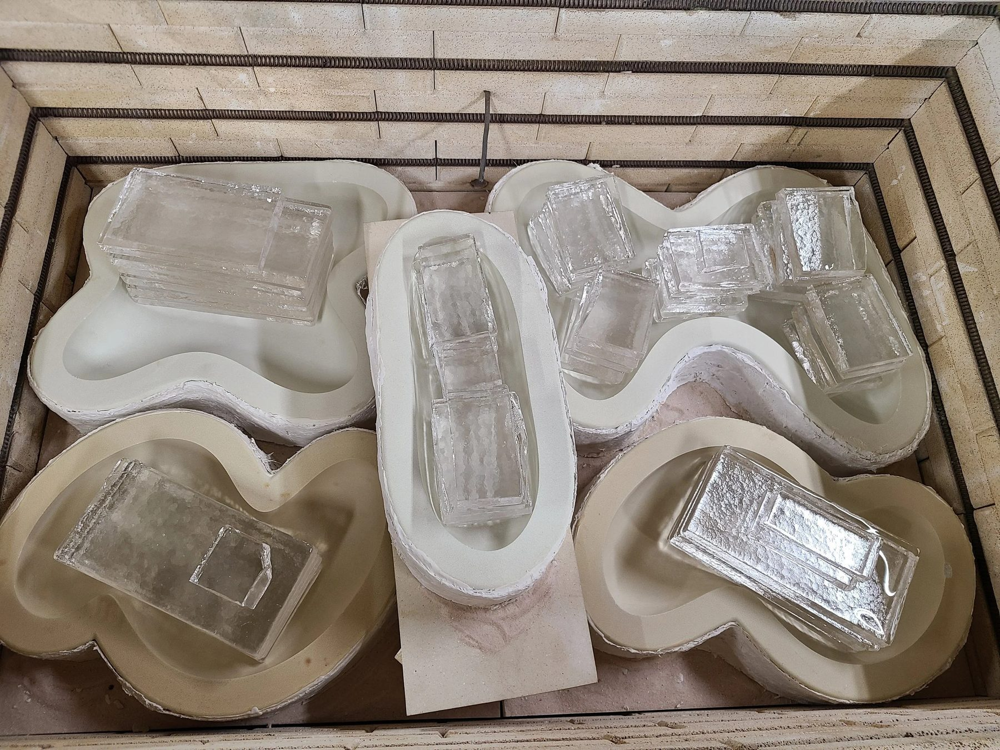
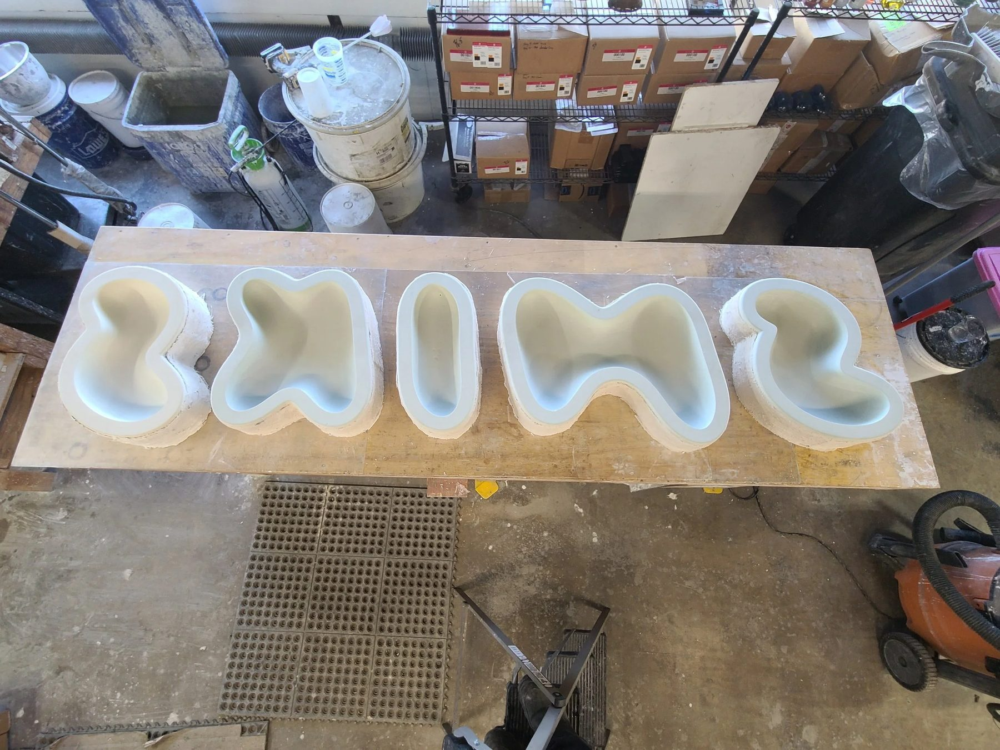
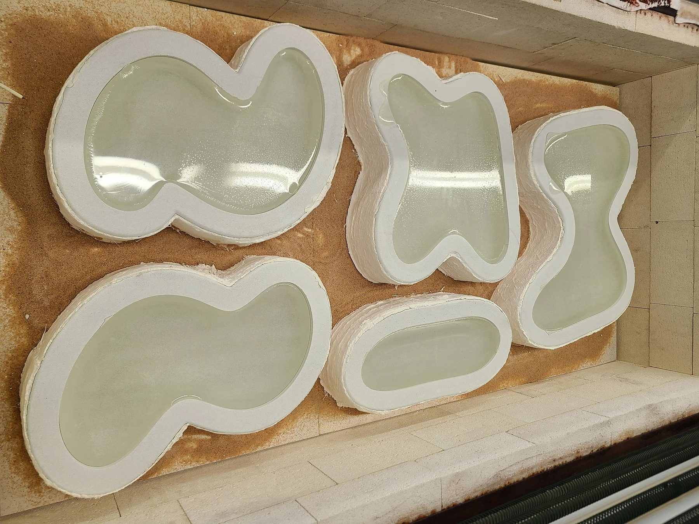

Glass / 2024
SKIMS Storefronts
Cast glass window displays
Cast glass logo displays engineered for the brand's first brick and mortar storefronts.
In 2024 we developed storefront displays for SKIMS locations across the US. The project was a union of artistic vision and large scale engineering, and it pushed the limits of architectural glass fabrication.
Designed by Willo Perron of Perron-Roettinger Studio, the logo appears to emerge from the storefront window, a sleek effect in keeping with the brand.
Bringing it to life took the combined expertise of Perron-Roettinger Studio, ChiLab Studio, and AGNORA, North America's leader in large format glass. Traditional casting technique met contemporary lamination and structural glazing.
Details
- Year
2024 - Location
Miami, Atlanta, Houston - Category
Glass - Materials
Cast glass, laminated architectural glass
Credits
- Design: Willo Perron, Perron-Roettinger Studio
- Glass: Ally Reza
- Lamination and install: AGNORA
Index





